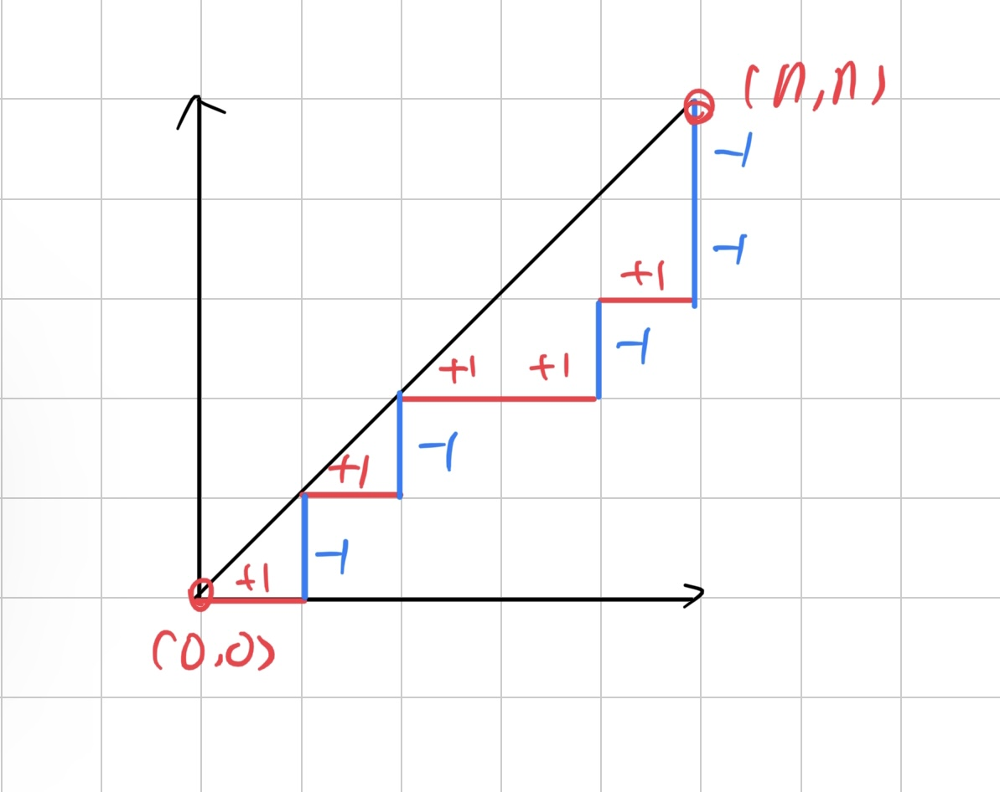
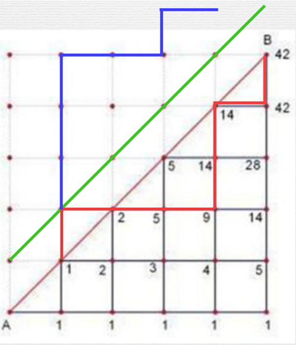

<!DOCTYPE html>
<html lang="zh-Hans-CN"><head><meta charset="utf-8"/><meta http-equiv="X-UA-Compatible" content="IE=Edge"/><link rel="stylesheet" type="text/css" href="../../css/modern-norm.min.css"/><link rel="stylesheet" type="text/css" href="../../css/prism.min.css"/><link rel="stylesheet" type="text/css" href="../../css/katex.min.css"/><link rel="stylesheet" type="text/css" href="../../css/wolai.css"/><title>卡特兰数（Catalan) - wolai 笔记</title><link rel="shortcut icon" href="data:image/svg+xml,%3Csvg xmlns=&apos;http://www.w3.org/2000/svg&apos; viewBox=&apos;0 0 800 800&apos;%3E%3Cdefs%3E%3Cstyle%3E.cls-1%7Bfill:%23fff;%7D%3C/style%3E%3C/defs%3E%3Cg%3E%3Cpath class=&apos;cls-1&apos; d=&apos;M610.08,0c66,0,90,6.88,114.13,19.79a134.62,134.62,0,0,1,56,56l2.28,4.4C793.93,103,800,127.88,800,189.92V610.08l-.08,11.56c-.78,57.38-7.58,79.89-19.71,102.57a134.62,134.62,0,0,1-56,56l-4.4,2.28C697,793.93,672.12,800,610.08,800H189.92l-11.56-.08c-57.38-.78-79.89-7.58-102.57-19.71a134.62,134.62,0,0,1-56-56l-2.28-4.4C6.44,697.75.4,673.72,0,616L0,189.92c0-66,6.88-90,19.79-114.13a134.62,134.62,0,0,1,56-56l4.4-2.28C102.25,6.44,126.28.4,184,0Z&apos;/%3E%3Cpath d=&apos;M610.08,0c66,0,90,6.88,114.13,19.79a134.62,134.62,0,0,1,56,56l2.28,4.4C793.93,103,800,127.88,800,189.92V610.08l-.08,11.56c-.78,57.38-7.58,79.89-19.71,102.57a134.62,134.62,0,0,1-56,56l-4.4,2.28C697,793.93,672.12,800,610.08,800H189.92l-11.56-.08c-57.38-.78-79.89-7.58-102.57-19.71a134.62,134.62,0,0,1-56-56l-2.28-4.4C6.44,697.75.4,673.72,0,616L0,189.92c0-66,6.88-90,19.79-114.13a134.62,134.62,0,0,1,56-56l4.4-2.28C102.25,6.44,126.28.4,184,0Zm4.72,88.9H185.2L172.42,89c-32.78.62-43.68,3.24-54.71,9.14a45.84,45.84,0,0,0-19.54,19.54c-6.61,12.36-9.11,24.55-9.27,67.49V614.8L89,627.58c.62,32.78,3.24,43.68,9.14,54.71a45.84,45.84,0,0,0,19.54,19.54c12.36,6.61,24.55,9.11,67.49,9.27H610.08c46.79,0,59.41-2.44,72.21-9.28a45.84,45.84,0,0,0,19.54-19.54c6.61-12.36,9.11-24.55,9.27-67.49V189.92c0-46.79-2.44-59.41-9.28-72.21a45.84,45.84,0,0,0-19.54-19.54C669.93,91.56,657.74,89.06,614.8,88.9ZM233.33,493.33A73.34,73.34,0,1,1,160,566.67,73.35,73.35,0,0,1,233.33,493.33Z&apos;/%3E%3C/g%3E%3C/svg%3E"></link></head><body><header><div class="image"></div><div class="title"><div class="banner"><div class="icon"></div></div><div data-title="卡特兰数（Catalan)" class="main-title"></div></div></header><article><h1 id="nsCPhDp7Ygk5nGRDpKd9LL" class="wolai-block"><span class="blue inline-wrap">重点速览</span></h1><div id="5USQCL5VPSTKw533CQEv2s" class="wolai-block wolai-text"><div><span class="inline-wrap">递推关系的解为：</span></div></div><div id="uDzivuad2N7FXherYkwGZ2" class="wolai-block wolai-text"><span class="katex-display"><span class="katex"><span class="katex-mathml"><math xmlns="http://www.w3.org/1998/Math/MathML" display="block"><semantics><mrow><msub><mi>H</mi><mi>n</mi></msub><mo>=</mo><mfrac><mrow><mo fence="true">(</mo><mtable rowspacing="0.16em" columnalign="center" columnspacing="1em"><mtr><mtd><mstyle scriptlevel="0" displaystyle="false"><mrow><mn>2</mn><mi>n</mi></mrow></mstyle></mtd></mtr><mtr><mtd><mstyle scriptlevel="0" displaystyle="false"><mi>n</mi></mstyle></mtd></mtr></mtable><mo fence="true">)</mo></mrow><mrow><mi>n</mi><mo>+</mo><mn>1</mn></mrow></mfrac><mrow><mo fence="true">(</mo><mi>n</mi><mo>≥</mo><mn>2</mn><mo separator="true">,</mo><mi>n</mi><mo>∈</mo><msub><mi mathvariant="bold">N</mi><mo lspace="0em" rspace="0em">+</mo></msub><mo fence="true">)</mo></mrow></mrow><annotation encoding="application/x-tex">H_{n}=\frac{\left(\begin{array}{c}2 n \\ n\end{array}\right)}{n+1}\left(n \geq 2, n \in \mathbf{N}_{+}\right)</annotation></semantics></math></span><span class="katex-html" aria-hidden="true"><span class="base"><span class="strut" style="height:0.8333em;vertical-align:-0.15em;"></span><span class="mord"><span class="mord mathnormal" style="margin-right:0.08125em;">H</span><span class="msupsub"><span class="vlist-t vlist-t2"><span class="vlist-r"><span class="vlist" style="height:0.1514em;"><span style="top:-2.55em;margin-left:-0.0813em;margin-right:0.05em;"><span class="pstrut" style="height:2.7em;"></span><span class="sizing reset-size6 size3 mtight"><span class="mord mtight"><span class="mord mathnormal mtight">n</span></span></span></span></span><span class="vlist-s">​</span></span><span class="vlist-r"><span class="vlist" style="height:0.15em;"><span></span></span></span></span></span></span><span class="mspace" style="margin-right:0.2778em;"></span><span class="mrel">=</span><span class="mspace" style="margin-right:0.2778em;"></span></span><span class="base"><span class="strut" style="height:3.5944em;vertical-align:-0.7693em;"></span><span class="mord"><span class="mopen nulldelimiter"></span><span class="mfrac"><span class="vlist-t vlist-t2"><span class="vlist-r"><span class="vlist" style="height:2.825em;"><span style="top:-2.764em;"><span class="pstrut" style="height:3.45em;"></span><span class="mord"><span class="mord mathnormal">n</span><span class="mspace" style="margin-right:0.2222em;"></span><span class="mbin">+</span><span class="mspace" style="margin-right:0.2222em;"></span><span class="mord">1</span></span></span><span style="top:-3.675em;"><span class="pstrut" style="height:3.45em;"></span><span class="frac-line" style="border-bottom-width:0.05em;"></span></span><span style="top:-4.825em;"><span class="pstrut" style="height:3.45em;"></span><span class="mord"><span class="minner"><span class="mopen delimcenter" style="top:0em;"><span class="delimsizing size3">(</span></span><span class="mord"><span class="mtable"><span class="arraycolsep" style="width:0.5em;"></span><span class="col-align-c"><span class="vlist-t vlist-t2"><span class="vlist-r"><span class="vlist" style="height:1.45em;"><span style="top:-3.61em;"><span class="pstrut" style="height:3em;"></span><span class="mord"><span class="mord">2</span><span class="mord mathnormal">n</span></span></span><span style="top:-2.41em;"><span class="pstrut" style="height:3em;"></span><span class="mord"><span class="mord mathnormal">n</span></span></span></span><span class="vlist-s">​</span></span><span class="vlist-r"><span class="vlist" style="height:0.95em;"><span></span></span></span></span></span><span class="arraycolsep" style="width:0.5em;"></span></span></span><span class="mclose delimcenter" style="top:0em;"><span class="delimsizing size3">)</span></span></span></span></span></span><span class="vlist-s">​</span></span><span class="vlist-r"><span class="vlist" style="height:0.7693em;"><span></span></span></span></span></span><span class="mclose nulldelimiter"></span></span><span class="mspace" style="margin-right:0.1667em;"></span><span class="minner"><span class="mopen delimcenter" style="top:0em;">(</span><span class="mord mathnormal">n</span><span class="mspace" style="margin-right:0.2778em;"></span><span class="mrel">≥</span><span class="mspace" style="margin-right:0.2778em;"></span><span class="mord">2</span><span class="mpunct">,</span><span class="mspace" style="margin-right:0.1667em;"></span><span class="mord mathnormal">n</span><span class="mspace" style="margin-right:0.2778em;"></span><span class="mrel">∈</span><span class="mspace" style="margin-right:0.2778em;"></span><span class="mord"><span class="mord mathbf">N</span><span class="msupsub"><span class="vlist-t vlist-t2"><span class="vlist-r"><span class="vlist" style="height:0.2583em;"><span style="top:-2.55em;margin-left:0em;margin-right:0.05em;"><span class="pstrut" style="height:2.7em;"></span><span class="sizing reset-size6 size3 mtight"><span class="mord mtight"><span class="mord mtight">+</span></span></span></span></span><span class="vlist-s">​</span></span><span class="vlist-r"><span class="vlist" style="height:0.2083em;"><span></span></span></span></span></span></span><span class="mclose delimcenter" style="top:0em;">)</span></span></span></span></span></span></div><div id="bWDCiTCaGAoG3cHJQqH7X3" class="wolai-block wolai-text"><span class="katex-display"><span class="katex"><span class="katex-mathml"><math xmlns="http://www.w3.org/1998/Math/MathML" display="block"><semantics><mrow><mi>C</mi><mo stretchy="false">(</mo><mi>n</mi><mo separator="true">,</mo><mi>m</mi><mo stretchy="false">)</mo><mo>=</mo><mi>n</mi><mo stretchy="false">!</mo><mi mathvariant="normal">/</mi><mo stretchy="false">(</mo><mo stretchy="false">(</mo><mi>n</mi><mo>−</mo><mi>m</mi><mo stretchy="false">)</mo><mo stretchy="false">!</mo><mo>⋆</mo><mi>m</mi><mo stretchy="false">!</mo><mo stretchy="false">)</mo></mrow><annotation encoding="application/x-tex">C(n, m)=n ! /((n-m) ! \star m !)</annotation></semantics></math></span><span class="katex-html" aria-hidden="true"><span class="base"><span class="strut" style="height:1em;vertical-align:-0.25em;"></span><span class="mord mathnormal" style="margin-right:0.07153em;">C</span><span class="mopen">(</span><span class="mord mathnormal">n</span><span class="mpunct">,</span><span class="mspace" style="margin-right:0.1667em;"></span><span class="mord mathnormal">m</span><span class="mclose">)</span><span class="mspace" style="margin-right:0.2778em;"></span><span class="mrel">=</span><span class="mspace" style="margin-right:0.2778em;"></span></span><span class="base"><span class="strut" style="height:1em;vertical-align:-0.25em;"></span><span class="mord mathnormal">n</span><span class="mclose">!</span><span class="mord">/</span><span class="mopen">((</span><span class="mord mathnormal">n</span><span class="mspace" style="margin-right:0.2222em;"></span><span class="mbin">−</span><span class="mspace" style="margin-right:0.2222em;"></span></span><span class="base"><span class="strut" style="height:1em;vertical-align:-0.25em;"></span><span class="mord mathnormal">m</span><span class="mclose">)!</span><span class="mspace" style="margin-right:0.2222em;"></span><span class="mbin">⋆</span><span class="mspace" style="margin-right:0.2222em;"></span></span><span class="base"><span class="strut" style="height:1em;vertical-align:-0.25em;"></span><span class="mord mathnormal">m</span><span class="mclose">!)</span></span></span></span></span></div><div id="2BXB8RDgy6mL4csoiZd7EK" class="wolai-block wolai-text"><div><span class="inline-wrap">关于 Catalan 数的常见公式：</span></div></div><div id="xwm5fDj9QZNYspEBpG6rWk" class="wolai-block wolai-text"><span class="katex-display"><span class="katex"><span class="katex-mathml"><math xmlns="http://www.w3.org/1998/Math/MathML" display="block"><semantics><mrow><msub><mi>H</mi><mi>n</mi></msub><mo>=</mo><mrow><mo fence="true">{</mo><mtable rowspacing="0.16em" columnalign="left left" columnspacing="1em"><mtr><mtd><mstyle scriptlevel="0" displaystyle="false"><mrow><msubsup><mo>∑</mo><mrow><mi>i</mi><mo>=</mo><mn>1</mn></mrow><mi>n</mi></msubsup><msub><mi>H</mi><mrow><mi>i</mi><mo>−</mo><mn>1</mn></mrow></msub><msub><mi>H</mi><mrow><mi>n</mi><mo>−</mo><mi>i</mi></mrow></msub></mrow></mstyle></mtd><mtd><mstyle scriptlevel="0" displaystyle="false"><mrow><mi>n</mi><mo>≥</mo><mn>2</mn><mo separator="true">,</mo><mi>n</mi><mo>∈</mo><msub><mi mathvariant="bold">N</mi><mo lspace="0em" rspace="0em">+</mo></msub></mrow></mstyle></mtd></mtr><mtr><mtd><mstyle scriptlevel="0" displaystyle="false"><mn>1</mn></mstyle></mtd><mtd><mstyle scriptlevel="0" displaystyle="false"><mrow><mi>n</mi><mo>=</mo><mn>0</mn><mo separator="true">,</mo><mn>1</mn></mrow></mstyle></mtd></mtr></mtable></mrow><mspace linebreak="newline"></mspace><msub><mi>H</mi><mi>n</mi></msub><mo>=</mo><mfrac><mrow><msub><mi>H</mi><mrow><mi>n</mi><mo>−</mo><mn>1</mn></mrow></msub><mo stretchy="false">(</mo><mn>4</mn><mi>n</mi><mo>−</mo><mn>2</mn><mo stretchy="false">)</mo></mrow><mrow><mi>n</mi><mo>+</mo><mn>1</mn></mrow></mfrac><mspace linebreak="newline"></mspace><msub><mi>H</mi><mi>n</mi></msub><mo>=</mo><mrow><mo fence="true">(</mo><mtable rowspacing="0.16em" columnalign="center" columnspacing="1em"><mtr><mtd><mstyle scriptlevel="0" displaystyle="false"><mrow><mn>2</mn><mi>n</mi></mrow></mstyle></mtd></mtr><mtr><mtd><mstyle scriptlevel="0" displaystyle="false"><mi>n</mi></mstyle></mtd></mtr></mtable><mo fence="true">)</mo></mrow><mo>−</mo><mrow><mo fence="true">(</mo><mtable rowspacing="0.16em" columnalign="center" columnspacing="1em"><mtr><mtd><mstyle scriptlevel="0" displaystyle="false"><mrow><mn>2</mn><mi>n</mi></mrow></mstyle></mtd></mtr><mtr><mtd><mstyle scriptlevel="0" displaystyle="false"><mrow><mi>n</mi><mo>−</mo><mn>1</mn></mrow></mstyle></mtd></mtr></mtable><mo fence="true">)</mo></mrow></mrow><annotation encoding="application/x-tex">H_{n}=\left\{\begin{array}{ll}\sum_{i=1}^{n} H_{i-1} H_{n-i} &amp; n \geq 2, n \in \mathbf{N}_{+} \\ 1 &amp; n=0,1\end{array}\right.\\H_{n}=\frac{H_{n-1}(4 n-2)}{n+1}\\H_{n}=\left(\begin{array}{c}2 n \\ n\end{array}\right)-\left(\begin{array}{c}2 n \\ n-1\end{array}\right)</annotation></semantics></math></span><span class="katex-html" aria-hidden="true"><span class="base"><span class="strut" style="height:0.8333em;vertical-align:-0.15em;"></span><span class="mord"><span class="mord mathnormal" style="margin-right:0.08125em;">H</span><span class="msupsub"><span class="vlist-t vlist-t2"><span class="vlist-r"><span class="vlist" style="height:0.1514em;"><span style="top:-2.55em;margin-left:-0.0813em;margin-right:0.05em;"><span class="pstrut" style="height:2.7em;"></span><span class="sizing reset-size6 size3 mtight"><span class="mord mtight"><span class="mord mathnormal mtight">n</span></span></span></span></span><span class="vlist-s">​</span></span><span class="vlist-r"><span class="vlist" style="height:0.15em;"><span></span></span></span></span></span></span><span class="mspace" style="margin-right:0.2778em;"></span><span class="mrel">=</span><span class="mspace" style="margin-right:0.2778em;"></span></span><span class="base"><span class="strut" style="height:2.4em;vertical-align:-0.95em;"></span><span class="minner"><span class="mopen delimcenter" style="top:0em;"><span class="delimsizing size3">{</span></span><span class="mord"><span class="mtable"><span class="arraycolsep" style="width:0.5em;"></span><span class="col-align-l"><span class="vlist-t vlist-t2"><span class="vlist-r"><span class="vlist" style="height:1.45em;"><span style="top:-3.61em;"><span class="pstrut" style="height:3em;"></span><span class="mord"><span class="mop"><span class="mop op-symbol small-op" style="position:relative;top:0em;">∑</span><span class="msupsub"><span class="vlist-t vlist-t2"><span class="vlist-r"><span class="vlist" style="height:0.8043em;"><span style="top:-2.4003em;margin-left:0em;margin-right:0.05em;"><span class="pstrut" style="height:2.7em;"></span><span class="sizing reset-size6 size3 mtight"><span class="mord mtight"><span class="mord mathnormal mtight">i</span><span class="mrel mtight">=</span><span class="mord mtight">1</span></span></span></span><span style="top:-3.2029em;margin-right:0.05em;"><span class="pstrut" style="height:2.7em;"></span><span class="sizing reset-size6 size3 mtight"><span class="mord mtight"><span class="mord mathnormal mtight">n</span></span></span></span></span><span class="vlist-s">​</span></span><span class="vlist-r"><span class="vlist" style="height:0.2997em;"><span></span></span></span></span></span></span><span class="mspace" style="margin-right:0.1667em;"></span><span class="mord"><span class="mord mathnormal" style="margin-right:0.08125em;">H</span><span class="msupsub"><span class="vlist-t vlist-t2"><span class="vlist-r"><span class="vlist" style="height:0.3117em;"><span style="top:-2.55em;margin-left:-0.0813em;margin-right:0.05em;"><span class="pstrut" style="height:2.7em;"></span><span class="sizing reset-size6 size3 mtight"><span class="mord mtight"><span class="mord mathnormal mtight">i</span><span class="mbin mtight">−</span><span class="mord mtight">1</span></span></span></span></span><span class="vlist-s">​</span></span><span class="vlist-r"><span class="vlist" style="height:0.2083em;"><span></span></span></span></span></span></span><span class="mord"><span class="mord mathnormal" style="margin-right:0.08125em;">H</span><span class="msupsub"><span class="vlist-t vlist-t2"><span class="vlist-r"><span class="vlist" style="height:0.3117em;"><span style="top:-2.55em;margin-left:-0.0813em;margin-right:0.05em;"><span class="pstrut" style="height:2.7em;"></span><span class="sizing reset-size6 size3 mtight"><span class="mord mtight"><span class="mord mathnormal mtight">n</span><span class="mbin mtight">−</span><span class="mord mathnormal mtight">i</span></span></span></span></span><span class="vlist-s">​</span></span><span class="vlist-r"><span class="vlist" style="height:0.2083em;"><span></span></span></span></span></span></span></span></span><span style="top:-2.41em;"><span class="pstrut" style="height:3em;"></span><span class="mord"><span class="mord">1</span></span></span></span><span class="vlist-s">​</span></span><span class="vlist-r"><span class="vlist" style="height:0.95em;"><span></span></span></span></span></span><span class="arraycolsep" style="width:0.5em;"></span><span class="arraycolsep" style="width:0.5em;"></span><span class="col-align-l"><span class="vlist-t vlist-t2"><span class="vlist-r"><span class="vlist" style="height:1.45em;"><span style="top:-3.61em;"><span class="pstrut" style="height:3em;"></span><span class="mord"><span class="mord mathnormal">n</span><span class="mspace" style="margin-right:0.2778em;"></span><span class="mrel">≥</span><span class="mspace" style="margin-right:0.2778em;"></span><span class="mord">2</span><span class="mpunct">,</span><span class="mspace" style="margin-right:0.1667em;"></span><span class="mord mathnormal">n</span><span class="mspace" style="margin-right:0.2778em;"></span><span class="mrel">∈</span><span class="mspace" style="margin-right:0.2778em;"></span><span class="mord"><span class="mord mathbf">N</span><span class="msupsub"><span class="vlist-t vlist-t2"><span class="vlist-r"><span class="vlist" style="height:0.2583em;"><span style="top:-2.55em;margin-left:0em;margin-right:0.05em;"><span class="pstrut" style="height:2.7em;"></span><span class="sizing reset-size6 size3 mtight"><span class="mord mtight"><span class="mord mtight">+</span></span></span></span></span><span class="vlist-s">​</span></span><span class="vlist-r"><span class="vlist" style="height:0.2083em;"><span></span></span></span></span></span></span></span></span><span style="top:-2.41em;"><span class="pstrut" style="height:3em;"></span><span class="mord"><span class="mord mathnormal">n</span><span class="mspace" style="margin-right:0.2778em;"></span><span class="mrel">=</span><span class="mspace" style="margin-right:0.2778em;"></span><span class="mord">0</span><span class="mpunct">,</span><span class="mspace" style="margin-right:0.1667em;"></span><span class="mord">1</span></span></span></span><span class="vlist-s">​</span></span><span class="vlist-r"><span class="vlist" style="height:0.95em;"><span></span></span></span></span></span><span class="arraycolsep" style="width:0.5em;"></span></span></span><span class="mclose nulldelimiter"></span></span></span><span class="mspace newline"></span><span class="base"><span class="strut" style="height:0.8333em;vertical-align:-0.15em;"></span><span class="mord"><span class="mord mathnormal" style="margin-right:0.08125em;">H</span><span class="msupsub"><span class="vlist-t vlist-t2"><span class="vlist-r"><span class="vlist" style="height:0.1514em;"><span style="top:-2.55em;margin-left:-0.0813em;margin-right:0.05em;"><span class="pstrut" style="height:2.7em;"></span><span class="sizing reset-size6 size3 mtight"><span class="mord mtight"><span class="mord mathnormal mtight">n</span></span></span></span></span><span class="vlist-s">​</span></span><span class="vlist-r"><span class="vlist" style="height:0.15em;"><span></span></span></span></span></span></span><span class="mspace" style="margin-right:0.2778em;"></span><span class="mrel">=</span><span class="mspace" style="margin-right:0.2778em;"></span></span><span class="base"><span class="strut" style="height:2.1963em;vertical-align:-0.7693em;"></span><span class="mord"><span class="mopen nulldelimiter"></span><span class="mfrac"><span class="vlist-t vlist-t2"><span class="vlist-r"><span class="vlist" style="height:1.427em;"><span style="top:-2.314em;"><span class="pstrut" style="height:3em;"></span><span class="mord"><span class="mord mathnormal">n</span><span class="mspace" style="margin-right:0.2222em;"></span><span class="mbin">+</span><span class="mspace" style="margin-right:0.2222em;"></span><span class="mord">1</span></span></span><span style="top:-3.225em;"><span class="pstrut" style="height:3em;"></span><span class="frac-line" style="border-bottom-width:0.05em;"></span></span><span style="top:-3.677em;"><span class="pstrut" style="height:3em;"></span><span class="mord"><span class="mord"><span class="mord mathnormal" style="margin-right:0.08125em;">H</span><span class="msupsub"><span class="vlist-t vlist-t2"><span class="vlist-r"><span class="vlist" style="height:0.3011em;"><span style="top:-2.55em;margin-left:-0.0813em;margin-right:0.05em;"><span class="pstrut" style="height:2.7em;"></span><span class="sizing reset-size6 size3 mtight"><span class="mord mtight"><span class="mord mathnormal mtight">n</span><span class="mbin mtight">−</span><span class="mord mtight">1</span></span></span></span></span><span class="vlist-s">​</span></span><span class="vlist-r"><span class="vlist" style="height:0.2083em;"><span></span></span></span></span></span></span><span class="mopen">(</span><span class="mord">4</span><span class="mord mathnormal">n</span><span class="mspace" style="margin-right:0.2222em;"></span><span class="mbin">−</span><span class="mspace" style="margin-right:0.2222em;"></span><span class="mord">2</span><span class="mclose">)</span></span></span></span><span class="vlist-s">​</span></span><span class="vlist-r"><span class="vlist" style="height:0.7693em;"><span></span></span></span></span></span><span class="mclose nulldelimiter"></span></span></span><span class="mspace newline"></span><span class="base"><span class="strut" style="height:0.8333em;vertical-align:-0.15em;"></span><span class="mord"><span class="mord mathnormal" style="margin-right:0.08125em;">H</span><span class="msupsub"><span class="vlist-t vlist-t2"><span class="vlist-r"><span class="vlist" style="height:0.1514em;"><span style="top:-2.55em;margin-left:-0.0813em;margin-right:0.05em;"><span class="pstrut" style="height:2.7em;"></span><span class="sizing reset-size6 size3 mtight"><span class="mord mtight"><span class="mord mathnormal mtight">n</span></span></span></span></span><span class="vlist-s">​</span></span><span class="vlist-r"><span class="vlist" style="height:0.15em;"><span></span></span></span></span></span></span><span class="mspace" style="margin-right:0.2778em;"></span><span class="mrel">=</span><span class="mspace" style="margin-right:0.2778em;"></span></span><span class="base"><span class="strut" style="height:2.4em;vertical-align:-0.95em;"></span><span class="minner"><span class="mopen delimcenter" style="top:0em;"><span class="delimsizing size3">(</span></span><span class="mord"><span class="mtable"><span class="arraycolsep" style="width:0.5em;"></span><span class="col-align-c"><span class="vlist-t vlist-t2"><span class="vlist-r"><span class="vlist" style="height:1.45em;"><span style="top:-3.61em;"><span class="pstrut" style="height:3em;"></span><span class="mord"><span class="mord">2</span><span class="mord mathnormal">n</span></span></span><span style="top:-2.41em;"><span class="pstrut" style="height:3em;"></span><span class="mord"><span class="mord mathnormal">n</span></span></span></span><span class="vlist-s">​</span></span><span class="vlist-r"><span class="vlist" style="height:0.95em;"><span></span></span></span></span></span><span class="arraycolsep" style="width:0.5em;"></span></span></span><span class="mclose delimcenter" style="top:0em;"><span class="delimsizing size3">)</span></span></span><span class="mspace" style="margin-right:0.2222em;"></span><span class="mbin">−</span><span class="mspace" style="margin-right:0.2222em;"></span></span><span class="base"><span class="strut" style="height:2.4em;vertical-align:-0.95em;"></span><span class="minner"><span class="mopen delimcenter" style="top:0em;"><span class="delimsizing size3">(</span></span><span class="mord"><span class="mtable"><span class="arraycolsep" style="width:0.5em;"></span><span class="col-align-c"><span class="vlist-t vlist-t2"><span class="vlist-r"><span class="vlist" style="height:1.45em;"><span style="top:-3.61em;"><span class="pstrut" style="height:3em;"></span><span class="mord"><span class="mord">2</span><span class="mord mathnormal">n</span></span></span><span style="top:-2.41em;"><span class="pstrut" style="height:3em;"></span><span class="mord"><span class="mord mathnormal">n</span><span class="mspace" style="margin-right:0.2222em;"></span><span class="mbin">−</span><span class="mspace" style="margin-right:0.2222em;"></span><span class="mord">1</span></span></span></span><span class="vlist-s">​</span></span><span class="vlist-r"><span class="vlist" style="height:0.95em;"><span></span></span></span></span></span><span class="arraycolsep" style="width:0.5em;"></span></span></span><span class="mclose delimcenter" style="top:0em;"><span class="delimsizing size3">)</span></span></span></span></span></span></span></div><div id="w6RtDaqgYmBz73wU14fbDv" class="wolai-bookmark wolai-block"><a href="https://oi-wiki.org/math/combinatorics/catalan/">卡特兰数 - OI Wiki</a><div class="info-box"><div class="text-pane"><div data-title="卡特兰数 - OI Wiki"></div><div data-desc="OI Wiki 是一个编程竞赛知识整合站点，提供有趣又实用的编程竞赛知识以及其他有帮助的内容，帮助广大编程竞赛爱好者更快更深入地学习编程竞赛"></div><div class="icon-host"><div class="icon icon-image" style="background-image: url(&quot;https://oi-wiki.org/favicon.ico&quot;)"></div><div data-hostname="oi-wiki.org"></div></div></div><div class="preview-pane"></div></div></div><h1 id="n8igTSBN6V6Z2sZo9nL3UP" class="wolai-block"><span class="blue inline-wrap">+1-1</span></h1><h2 id="aFL719SeQfMsm1n6ikKqEx" class="wolai-block"><span class="inline-wrap">提出</span></h2><div id="guXCmunWkjQfeJS6nZEcFj" class="wolai-block wolai-text"><div><span class="inline-wrap">这类问题多半是一进一出的问题，《竞赛一本通：初赛篇》对这类问题有过这样的一个归纳</span></div></div><div id="xdwV7Ynn4RKDs2SLjyeey8" class="wolai-block wolai-text"><div><span><span class="katex"><span class="katex-mathml"><math xmlns="http://www.w3.org/1998/Math/MathML"><semantics><mrow><mtext>有这样一组数列</mtext><mo>:</mo></mrow><annotation encoding="application/x-tex">有这样一组数列:</annotation></semantics></math></span><span class="katex-html" aria-hidden="true"><span class="base"><span class="strut" style="height:0.6833em;"></span><span class="mord cjk_fallback">有这样一组数列</span><span class="mspace" style="margin-right:0.2778em;"></span><span class="mrel">:</span></span></span></span></span></div></div><ol class="wolai-block"><li id="o32YhMjwTWNaKSeFvNYCTR"><div class="marker"></div><span><span class="katex"><span class="katex-mathml"><math xmlns="http://www.w3.org/1998/Math/MathML"><semantics><mrow><mtext>由</mtext><mi>n</mi><mtext>个</mtext><mo>+</mo><mn>1</mn><mtext>和</mtext><mi>n</mi><mtext>个</mtext><mo>−</mo><mn>1</mn><mtext>组成</mtext></mrow><annotation encoding="application/x-tex">由n个+1和n个-1组成</annotation></semantics></math></span><span class="katex-html" aria-hidden="true"><span class="base"><span class="strut" style="height:0.7667em;vertical-align:-0.0833em;"></span><span class="mord cjk_fallback">由</span><span class="mord mathnormal">n</span><span class="mord cjk_fallback">个</span><span class="mspace" style="margin-right:0.2222em;"></span><span class="mbin">+</span><span class="mspace" style="margin-right:0.2222em;"></span></span><span class="base"><span class="strut" style="height:0.7667em;vertical-align:-0.0833em;"></span><span class="mord">1</span><span class="mord cjk_fallback">和</span><span class="mord mathnormal">n</span><span class="mord cjk_fallback">个</span><span class="mspace" style="margin-right:0.2222em;"></span><span class="mbin">−</span><span class="mspace" style="margin-right:0.2222em;"></span></span><span class="base"><span class="strut" style="height:0.6833em;"></span><span class="mord">1</span><span class="mord cjk_fallback">组成</span></span></span></span></span></li><li id="8s8TsNK5DfQRf49sBWQkmx"><div class="marker"></div><span><span class="katex"><span class="katex-mathml"><math xmlns="http://www.w3.org/1998/Math/MathML"><semantics><mrow><mtext>前缀和始终</mtext><mo>≥</mo><mn>0</mn></mrow><annotation encoding="application/x-tex">前缀和始终≥0</annotation></semantics></math></span><span class="katex-html" aria-hidden="true"><span class="base"><span class="strut" style="height:0.8193em;vertical-align:-0.136em;"></span><span class="mord cjk_fallback">前缀和始终</span><span class="mspace" style="margin-right:0.2778em;"></span><span class="mrel">≥</span><span class="mspace" style="margin-right:0.2778em;"></span></span><span class="base"><span class="strut" style="height:0.6444em;"></span><span class="mord">0</span></span></span></span></span></li></ol><div id="bwN6MX9fRvmkvvKzj68apo" class="wolai-block wolai-text"><div><span><span class="katex"><span class="katex-mathml"><math xmlns="http://www.w3.org/1998/Math/MathML"><semantics><mrow><mtext>比如：</mtext></mrow><annotation encoding="application/x-tex">
比如： </annotation></semantics></math></span><span class="katex-html" aria-hidden="true"><span class="base"><span class="strut" style="height:0.6833em;"></span><span class="mord cjk_fallback">比如：</span></span></span></span></span></div></div><div id="c6vgZd7qDbn15bLhP8sHEW" class="wolai-block wolai-text"><div><span><span class="katex"><span class="katex-mathml"><math xmlns="http://www.w3.org/1998/Math/MathML"><semantics><mrow><mo>+</mo><mn>1</mn><mo separator="true">,</mo><mo>−</mo><mn>1</mn><mo separator="true">,</mo><mo>+</mo><mn>1</mn><mo separator="true">,</mo><mo>+</mo><mn>1</mn><mo separator="true">,</mo><mo>+</mo><mn>1</mn><mo separator="true">,</mo><mo>−</mo><mn>1</mn><mo separator="true">,</mo><mo>−</mo><mn>1</mn><mo separator="true">,</mo><mo>−</mo><mn>1</mn></mrow><annotation encoding="application/x-tex">+1,-1,+1,+1,+1,-1,-1,-1</annotation></semantics></math></span><span class="katex-html" aria-hidden="true"><span class="base"><span class="strut" style="height:0.8389em;vertical-align:-0.1944em;"></span><span class="mord">+</span><span class="mord">1</span><span class="mpunct">,</span><span class="mspace" style="margin-right:0.1667em;"></span><span class="mord">−</span><span class="mord">1</span><span class="mpunct">,</span><span class="mspace" style="margin-right:0.1667em;"></span><span class="mord">+</span><span class="mord">1</span><span class="mpunct">,</span><span class="mspace" style="margin-right:0.1667em;"></span><span class="mord">+</span><span class="mord">1</span><span class="mpunct">,</span><span class="mspace" style="margin-right:0.1667em;"></span><span class="mord">+</span><span class="mord">1</span><span class="mpunct">,</span><span class="mspace" style="margin-right:0.1667em;"></span><span class="mord">−</span><span class="mord">1</span><span class="mpunct">,</span><span class="mspace" style="margin-right:0.1667em;"></span><span class="mord">−</span><span class="mord">1</span><span class="mpunct">,</span><span class="mspace" style="margin-right:0.1667em;"></span><span class="mord">−</span><span class="mord">1</span></span></span></span></span></div></div><div id="dqKuQXcDXgkexi8SxqSoS7" class="wolai-block wolai-text"><div><span class="inline-wrap"><b><code>卡特兰数列</code></b></span><span class="inline-wrap">可以解决这样一个问题：这样</span><span><span class="katex"><span class="katex-mathml"><math xmlns="http://www.w3.org/1998/Math/MathML"><semantics><mrow><mi>n</mi></mrow><annotation encoding="application/x-tex">n</annotation></semantics></math></span><span class="katex-html" aria-hidden="true"><span class="base"><span class="strut" style="height:0.4306em;"></span><span class="mord mathnormal">n</span></span></span></span></span><span class="inline-wrap">规模的数列有多少个?</span></div></div><h2 id="qty7wH3coQQTCnCmMA5wF2" class="wolai-block"><span class="inline-wrap">求解</span></h2><h3 id="7XuoiGtxEeMqJ6EtGncVfJ" class="wolai-block"><span class="inline-wrap">【引入】</span></h3><div id="3bNsnwUfJD4ZbJdKahRmxu" class="wolai-block wolai-text"><div><span class="inline-wrap">这个问题的求解可以转换为一个可视化的小学奥数问题</span></div></div><div id="mh8v2KcqACdm38xGm3Xa7J" class="wolai-block wolai-text"><div><span class="inline-wrap">从</span><span><span class="katex"><span class="katex-mathml"><math xmlns="http://www.w3.org/1998/Math/MathML"><semantics><mrow><mo stretchy="false">(</mo><mn>0</mn><mo separator="true">,</mo><mn>0</mn><mo stretchy="false">)</mo></mrow><annotation encoding="application/x-tex">(0,0)</annotation></semantics></math></span><span class="katex-html" aria-hidden="true"><span class="base"><span class="strut" style="height:1em;vertical-align:-0.25em;"></span><span class="mopen">(</span><span class="mord">0</span><span class="mpunct">,</span><span class="mspace" style="margin-right:0.1667em;"></span><span class="mord">0</span><span class="mclose">)</span></span></span></span></span><span class="inline-wrap">这个点出发到</span><span><span class="katex"><span class="katex-mathml"><math xmlns="http://www.w3.org/1998/Math/MathML"><semantics><mrow><mo stretchy="false">(</mo><mi>n</mi><mo separator="true">,</mo><mi>n</mi><mo stretchy="false">)</mo></mrow><annotation encoding="application/x-tex">(n,n) </annotation></semantics></math></span><span class="katex-html" aria-hidden="true"><span class="base"><span class="strut" style="height:1em;vertical-align:-0.25em;"></span><span class="mopen">(</span><span class="mord mathnormal">n</span><span class="mpunct">,</span><span class="mspace" style="margin-right:0.1667em;"></span><span class="mord mathnormal">n</span><span class="mclose">)</span></span></span></span></span><span class="inline-wrap">这个点，以</span><span><span class="katex"><span class="katex-mathml"><math xmlns="http://www.w3.org/1998/Math/MathML"><semantics><mrow><mo>+</mo><mn>1</mn></mrow><annotation encoding="application/x-tex">+1</annotation></semantics></math></span><span class="katex-html" aria-hidden="true"><span class="base"><span class="strut" style="height:0.7278em;vertical-align:-0.0833em;"></span><span class="mord">+</span><span class="mord">1</span></span></span></span></span><span class="inline-wrap">为向右走，以</span><span><span class="katex"><span class="katex-mathml"><math xmlns="http://www.w3.org/1998/Math/MathML"><semantics><mrow><mo>−</mo><mn>1</mn></mrow><annotation encoding="application/x-tex">-1</annotation></semantics></math></span><span class="katex-html" aria-hidden="true"><span class="base"><span class="strut" style="height:0.7278em;vertical-align:-0.0833em;"></span><span class="mord">−</span><span class="mord">1</span></span></span></span></span><span class="inline-wrap">为向上走（只能向右或者向上走），要求不能超过中间这条线，问走到</span><span><span class="katex"><span class="katex-mathml"><math xmlns="http://www.w3.org/1998/Math/MathML"><semantics><mrow><mo stretchy="false">(</mo><mi>n</mi><mo separator="true">,</mo><mi>n</mi><mo stretchy="false">)</mo></mrow><annotation encoding="application/x-tex">(n,n)</annotation></semantics></math></span><span class="katex-html" aria-hidden="true"><span class="base"><span class="strut" style="height:1em;vertical-align:-0.25em;"></span><span class="mopen">(</span><span class="mord mathnormal">n</span><span class="mpunct">,</span><span class="mspace" style="margin-right:0.1667em;"></span><span class="mord mathnormal">n</span><span class="mclose">)</span></span></span></span></span><span class="inline-wrap">点有多少种走法？</span></div></div><div id="oq6vL4tzLKc9m4GZXk4Uaz" class="wolai-block wolai-text"><div><span class="inline-wrap">小学奥数老师给出过这样一种解法：</span></div></div><ul class="wolai-block"><li id="iEEyZ1aUdkwc6CdM1kpWM3"><div class="marker"><svg width="24" height="24" viewBox="0 0 24 24" fill="currentColor" xmlns="http://www.w3.org/2000/svg"><path d="M12 14.5a2.5 2.5 0 100-5 2.5 2.5 0 000 5z"></path></svg></div><span class="inline-wrap">一种记录方法：在每个交叉点上记录一个数字，这个数字代表着到达这个位置的不同路线数量。</span></li><li id="243W66h39Hzf8RrBgDqu6q"><div class="marker"><svg width="24" height="24" viewBox="0 0 24 24" fill="currentColor" xmlns="http://www.w3.org/2000/svg"><path d="M12 14.5a2.5 2.5 0 100-5 2.5 2.5 0 000 5z"></path></svg></div><span class="inline-wrap">第<span class="jill"></span>0<span class="jill"></span>排点：我们现在仅考虑最先下面这一排点，也就是</span><span><span class="katex"><span class="katex-mathml"><math xmlns="http://www.w3.org/1998/Math/MathML"><semantics><mrow><mo stretchy="false">(</mo><mn>0</mn><mo separator="true">,</mo><mn>0</mn><mo stretchy="false">)</mo><mo separator="true">,</mo><mo stretchy="false">(</mo><mn>0</mn><mo separator="true">,</mo><mn>1</mn><mo stretchy="false">)</mo><mo>…</mo><mo stretchy="false">(</mo><mn>0</mn><mo separator="true">,</mo><mi>n</mi><mo stretchy="false">)</mo></mrow><annotation encoding="application/x-tex">(0,0),(0,1)\dots(0,n) </annotation></semantics></math></span><span class="katex-html" aria-hidden="true"><span class="base"><span class="strut" style="height:1em;vertical-align:-0.25em;"></span><span class="mopen">(</span><span class="mord">0</span><span class="mpunct">,</span><span class="mspace" style="margin-right:0.1667em;"></span><span class="mord">0</span><span class="mclose">)</span><span class="mpunct">,</span><span class="mspace" style="margin-right:0.1667em;"></span><span class="mopen">(</span><span class="mord">0</span><span class="mpunct">,</span><span class="mspace" style="margin-right:0.1667em;"></span><span class="mord">1</span><span class="mclose">)</span><span class="mspace" style="margin-right:0.1667em;"></span><span class="minner">…</span><span class="mspace" style="margin-right:0.1667em;"></span><span class="mopen">(</span><span class="mord">0</span><span class="mpunct">,</span><span class="mspace" style="margin-right:0.1667em;"></span><span class="mord mathnormal">n</span><span class="mclose">)</span></span></span></span></span><span class="inline-wrap">这一排点，由于这一排点只能向右走而不能向上走，所以到达第<span class="jill"></span>0<span class="jill"></span>排的任何一个点实际上只有一种路线：从</span><span><span class="katex"><span class="katex-mathml"><math xmlns="http://www.w3.org/1998/Math/MathML"><semantics><mrow><mo stretchy="false">(</mo><mn>0</mn><mo separator="true">,</mo><mi>n</mi><mo>−</mo><mn>1</mn><mo stretchy="false">)</mo></mrow><annotation encoding="application/x-tex">(0,n-1)</annotation></semantics></math></span><span class="katex-html" aria-hidden="true"><span class="base"><span class="strut" style="height:1em;vertical-align:-0.25em;"></span><span class="mopen">(</span><span class="mord">0</span><span class="mpunct">,</span><span class="mspace" style="margin-right:0.1667em;"></span><span class="mord mathnormal">n</span><span class="mspace" style="margin-right:0.2222em;"></span><span class="mbin">−</span><span class="mspace" style="margin-right:0.2222em;"></span></span><span class="base"><span class="strut" style="height:1em;vertical-align:-0.25em;"></span><span class="mord">1</span><span class="mclose">)</span></span></span></span></span><span class="inline-wrap">这个点往右走一步（就是一直往右走）</span></li><li id="aGZUpSqJNASXxHUwzrokaN"><div class="marker"><svg width="24" height="24" viewBox="0 0 24 24" fill="currentColor" xmlns="http://www.w3.org/2000/svg"><path d="M12 14.5a2.5 2.5 0 100-5 2.5 2.5 0 000 5z"></path></svg></div><span class="inline-wrap">第<span class="jill"></span>1<span class="jill"></span>排点：考虑第一排点，比如</span><span><span class="katex"><span class="katex-mathml"><math xmlns="http://www.w3.org/1998/Math/MathML"><semantics><mrow><mo stretchy="false">(</mo><mn>1</mn><mo separator="true">,</mo><mn>1</mn><mo stretchy="false">)</mo></mrow><annotation encoding="application/x-tex">(1,1) </annotation></semantics></math></span><span class="katex-html" aria-hidden="true"><span class="base"><span class="strut" style="height:1em;vertical-align:-0.25em;"></span><span class="mopen">(</span><span class="mord">1</span><span class="mpunct">,</span><span class="mspace" style="margin-right:0.1667em;"></span><span class="mord">1</span><span class="mclose">)</span></span></span></span></span><span class="inline-wrap">这个点，观察图就可以发现，我们可以从</span><span><span class="katex"><span class="katex-mathml"><math xmlns="http://www.w3.org/1998/Math/MathML"><semantics><mrow><mo stretchy="false">(</mo><mn>0</mn><mo separator="true">,</mo><mn>1</mn><mo stretchy="false">)</mo></mrow><annotation encoding="application/x-tex">(0,1)</annotation></semantics></math></span><span class="katex-html" aria-hidden="true"><span class="base"><span class="strut" style="height:1em;vertical-align:-0.25em;"></span><span class="mopen">(</span><span class="mord">0</span><span class="mpunct">,</span><span class="mspace" style="margin-right:0.1667em;"></span><span class="mord">1</span><span class="mclose">)</span></span></span></span></span><span class="inline-wrap">这个点向上走一格到这个位置。而对于</span><span><span class="katex"><span class="katex-mathml"><math xmlns="http://www.w3.org/1998/Math/MathML"><semantics><mrow><mo stretchy="false">(</mo><mn>1</mn><mo separator="true">,</mo><mn>2</mn><mo stretchy="false">)</mo></mrow><annotation encoding="application/x-tex">(1,2)</annotation></semantics></math></span><span class="katex-html" aria-hidden="true"><span class="base"><span class="strut" style="height:1em;vertical-align:-0.25em;"></span><span class="mopen">(</span><span class="mord">1</span><span class="mpunct">,</span><span class="mspace" style="margin-right:0.1667em;"></span><span class="mord">2</span><span class="mclose">)</span></span></span></span></span><span class="inline-wrap">这个点，我们可以从</span><span><span class="katex"><span class="katex-mathml"><math xmlns="http://www.w3.org/1998/Math/MathML"><semantics><mrow><mo stretchy="false">(</mo><mn>0</mn><mo separator="true">,</mo><mn>2</mn><mo stretchy="false">)</mo></mrow><annotation encoding="application/x-tex">(0,2)</annotation></semantics></math></span><span class="katex-html" aria-hidden="true"><span class="base"><span class="strut" style="height:1em;vertical-align:-0.25em;"></span><span class="mopen">(</span><span class="mord">0</span><span class="mpunct">,</span><span class="mspace" style="margin-right:0.1667em;"></span><span class="mord">2</span><span class="mclose">)</span></span></span></span></span><span class="inline-wrap">向上或者从</span><span><span class="katex"><span class="katex-mathml"><math xmlns="http://www.w3.org/1998/Math/MathML"><semantics><mrow><mo stretchy="false">(</mo><mn>1</mn><mo separator="true">,</mo><mn>1</mn><mo stretchy="false">)</mo></mrow><annotation encoding="application/x-tex">(1,1)</annotation></semantics></math></span><span class="katex-html" aria-hidden="true"><span class="base"><span class="strut" style="height:1em;vertical-align:-0.25em;"></span><span class="mopen">(</span><span class="mord">1</span><span class="mpunct">,</span><span class="mspace" style="margin-right:0.1667em;"></span><span class="mord">1</span><span class="mclose">)</span></span></span></span></span><span class="inline-wrap">向右。是</span><span><span class="katex"><span class="katex-mathml"><math xmlns="http://www.w3.org/1998/Math/MathML"><semantics><mrow><mn>1</mn><mo>+</mo><mn>1</mn><mo>=</mo><mn>2</mn></mrow><annotation encoding="application/x-tex">1+1=2</annotation></semantics></math></span><span class="katex-html" aria-hidden="true"><span class="base"><span class="strut" style="height:0.7278em;vertical-align:-0.0833em;"></span><span class="mord">1</span><span class="mspace" style="margin-right:0.2222em;"></span><span class="mbin">+</span><span class="mspace" style="margin-right:0.2222em;"></span></span><span class="base"><span class="strut" style="height:0.6444em;"></span><span class="mord">1</span><span class="mspace" style="margin-right:0.2778em;"></span><span class="mrel">=</span><span class="mspace" style="margin-right:0.2778em;"></span></span><span class="base"><span class="strut" style="height:0.6444em;"></span><span class="mord">2</span></span></span></span></span></li></ul><div id="eTzZfQY3ycwj2iKwGtqxGA" class="wolai-block wolai-text"><div><span class="inline-wrap">我们不难发现这其实是一种<span class="jill"></span>dp，转移方程为</span><span><span class="katex"><span class="katex-mathml"><math xmlns="http://www.w3.org/1998/Math/MathML"><semantics><mrow><mi>d</mi><mi>p</mi><mo stretchy="false">[</mo><mi>i</mi><mo stretchy="false">]</mo><mo stretchy="false">[</mo><mi>j</mi><mo stretchy="false">]</mo><mo>=</mo><mi>d</mi><mi>p</mi><mo stretchy="false">[</mo><mi>i</mi><mo>−</mo><mn>1</mn><mo stretchy="false">]</mo><mo stretchy="false">[</mo><mi>j</mi><mo stretchy="false">]</mo><mo>+</mo><mi>d</mi><mi>p</mi><mo stretchy="false">[</mo><mi>i</mi><mo stretchy="false">]</mo><mo stretchy="false">[</mo><mi>j</mi><mo>−</mo><mn>1</mn><mo stretchy="false">]</mo></mrow><annotation encoding="application/x-tex">dp[i][j]=dp[i-1][j]+dp[i][j-1] </annotation></semantics></math></span><span class="katex-html" aria-hidden="true"><span class="base"><span class="strut" style="height:1em;vertical-align:-0.25em;"></span><span class="mord mathnormal">d</span><span class="mord mathnormal">p</span><span class="mopen">[</span><span class="mord mathnormal">i</span><span class="mclose">]</span><span class="mopen">[</span><span class="mord mathnormal" style="margin-right:0.05724em;">j</span><span class="mclose">]</span><span class="mspace" style="margin-right:0.2778em;"></span><span class="mrel">=</span><span class="mspace" style="margin-right:0.2778em;"></span></span><span class="base"><span class="strut" style="height:1em;vertical-align:-0.25em;"></span><span class="mord mathnormal">d</span><span class="mord mathnormal">p</span><span class="mopen">[</span><span class="mord mathnormal">i</span><span class="mspace" style="margin-right:0.2222em;"></span><span class="mbin">−</span><span class="mspace" style="margin-right:0.2222em;"></span></span><span class="base"><span class="strut" style="height:1em;vertical-align:-0.25em;"></span><span class="mord">1</span><span class="mclose">]</span><span class="mopen">[</span><span class="mord mathnormal" style="margin-right:0.05724em;">j</span><span class="mclose">]</span><span class="mspace" style="margin-right:0.2222em;"></span><span class="mbin">+</span><span class="mspace" style="margin-right:0.2222em;"></span></span><span class="base"><span class="strut" style="height:1em;vertical-align:-0.25em;"></span><span class="mord mathnormal">d</span><span class="mord mathnormal">p</span><span class="mopen">[</span><span class="mord mathnormal">i</span><span class="mclose">]</span><span class="mopen">[</span><span class="mord mathnormal" style="margin-right:0.05724em;">j</span><span class="mspace" style="margin-right:0.2222em;"></span><span class="mbin">−</span><span class="mspace" style="margin-right:0.2222em;"></span></span><span class="base"><span class="strut" style="height:1em;vertical-align:-0.25em;"></span><span class="mord">1</span><span class="mclose">]</span></span></span></span></span><span class="inline-wrap">，而当</span><span><span class="katex"><span class="katex-mathml"><math xmlns="http://www.w3.org/1998/Math/MathML"><semantics><mrow><mi>i</mi><mo>=</mo><mi>j</mi><mo>=</mo><mi>n</mi></mrow><annotation encoding="application/x-tex">i=j=n</annotation></semantics></math></span><span class="katex-html" aria-hidden="true"><span class="base"><span class="strut" style="height:0.6595em;"></span><span class="mord mathnormal">i</span><span class="mspace" style="margin-right:0.2778em;"></span><span class="mrel">=</span><span class="mspace" style="margin-right:0.2778em;"></span></span><span class="base"><span class="strut" style="height:0.854em;vertical-align:-0.1944em;"></span><span class="mord mathnormal" style="margin-right:0.05724em;">j</span><span class="mspace" style="margin-right:0.2778em;"></span><span class="mrel">=</span><span class="mspace" style="margin-right:0.2778em;"></span></span><span class="base"><span class="strut" style="height:0.4306em;"></span><span class="mord mathnormal">n</span></span></span></span></span><span class="inline-wrap">时，</span><span><span class="katex"><span class="katex-mathml"><math xmlns="http://www.w3.org/1998/Math/MathML"><semantics><mrow><mi>d</mi><mi>p</mi><mo stretchy="false">[</mo><mi>n</mi><mo stretchy="false">]</mo><mo stretchy="false">[</mo><mi>n</mi><mo stretchy="false">]</mo><mo>=</mo><mi>c</mi><mi>a</mi><mi>t</mi><mi>a</mi><mi>l</mi><mi>a</mi><mi>n</mi><mo stretchy="false">(</mo><mi>n</mi><mo stretchy="false">)</mo></mrow><annotation encoding="application/x-tex">dp[n][n]=catalan(n)
 </annotation></semantics></math></span><span class="katex-html" aria-hidden="true"><span class="base"><span class="strut" style="height:1em;vertical-align:-0.25em;"></span><span class="mord mathnormal">d</span><span class="mord mathnormal">p</span><span class="mopen">[</span><span class="mord mathnormal">n</span><span class="mclose">]</span><span class="mopen">[</span><span class="mord mathnormal">n</span><span class="mclose">]</span><span class="mspace" style="margin-right:0.2778em;"></span><span class="mrel">=</span><span class="mspace" style="margin-right:0.2778em;"></span></span><span class="base"><span class="strut" style="height:1em;vertical-align:-0.25em;"></span><span class="mord mathnormal">c</span><span class="mord mathnormal">a</span><span class="mord mathnormal">t</span><span class="mord mathnormal">a</span><span class="mord mathnormal" style="margin-right:0.01968em;">l</span><span class="mord mathnormal">an</span><span class="mopen">(</span><span class="mord mathnormal">n</span><span class="mclose">)</span></span></span></span></span></div></div><div id="w5sLDYzhZzdMfEF69t2cgS" class="wolai-block wolai-text"><div><span class="inline-wrap"></span><br/></div></div><div id="nZauv5D8zJgmpatuqM9NV7" class="wolai-row"><div id="6BPK2XhwVphaPDpa6mgS72" class="wolai-col" style="flex-grow: 0.38172793668859145"><div id="tBKDn7Lu2tDnqzAKXbrSbp" class="wolai-block"><figure class="wolai-left" style="width: 100%"></figure></div></div><div id="8qQqHCYfvEK2Rk3M165hxp" class="wolai-col" style="flex-grow: 0.3063602896297679"><div id="rvPmYfAjkTUf3dEGBidmpg" class="wolai-block"><figure class="wolai-left" style="width: 100%"></figure></div></div><div id="cWmyGzNRPrTazmeZJF5m4w" class="wolai-col" style="flex-grow: 0.3118796011980842"><div id="28Ad2qKmswd4v88s5ByVSQ" class="wolai-block"><figure class="wolai-left" style="width: 100%"></figure></div></div></div><h3 id="s6Vn2EgHcoxjVnmPScJwwX" class="wolai-block"><span class="inline-wrap">通项公式推导</span></h3><div id="vnK4e4XFaAg4ooSjqkWQmx" class="wolai-row"><div id="ue84ErUNKKdyrDfbs1BPtB" class="wolai-col" style="flex-grow: 0.6458333333333334"><ul class="wolai-block"><li id="hBayLkt99dJzAx12tWSFz6"><div class="marker"><svg width="24" height="24" viewBox="0 0 24 24" fill="currentColor" xmlns="http://www.w3.org/2000/svg"><path d="M12 14.5a2.5 2.5 0 100-5 2.5 2.5 0 000 5z"></path></svg></div><span class="inline-wrap">不考虑第一象限平分线的限制，方案数为
</span><div id="nR9JWX6Ei6YKYvUdjNd5K3" class="wolai-block wolai-text"><span class="katex-display"><span class="katex"><span class="katex-mathml"><math xmlns="http://www.w3.org/1998/Math/MathML" display="block"><semantics><mrow><mo fence="true">(</mo><mtable rowspacing="0.16em" columnalign="center" columnspacing="1em"><mtr><mtd><mstyle scriptlevel="0" displaystyle="false"><mrow><mn>2</mn><mi>n</mi></mrow></mstyle></mtd></mtr><mtr><mtd><mstyle scriptlevel="0" displaystyle="false"><mi>n</mi></mstyle></mtd></mtr></mtable><mo fence="true">)</mo></mrow><annotation encoding="application/x-tex">\left(\begin{array}{c}2 n \\ n\end{array}\right)</annotation></semantics></math></span><span class="katex-html" aria-hidden="true"><span class="base"><span class="strut" style="height:2.4em;vertical-align:-0.95em;"></span><span class="minner"><span class="mopen delimcenter" style="top:0em;"><span class="delimsizing size3">(</span></span><span class="mord"><span class="mtable"><span class="arraycolsep" style="width:0.5em;"></span><span class="col-align-c"><span class="vlist-t vlist-t2"><span class="vlist-r"><span class="vlist" style="height:1.45em;"><span style="top:-3.61em;"><span class="pstrut" style="height:3em;"></span><span class="mord"><span class="mord">2</span><span class="mord mathnormal">n</span></span></span><span style="top:-2.41em;"><span class="pstrut" style="height:3em;"></span><span class="mord"><span class="mord mathnormal">n</span></span></span></span><span class="vlist-s">​</span></span><span class="vlist-r"><span class="vlist" style="height:0.95em;"><span></span></span></span></span></span><span class="arraycolsep" style="width:0.5em;"></span></span></span><span class="mclose delimcenter" style="top:0em;"><span class="delimsizing size3">)</span></span></span></span></span></span></span></div></li><li id="iemmXuH6ahht4yM9Lu4oge"><div class="marker"><svg width="24" height="24" viewBox="0 0 24 24" fill="currentColor" xmlns="http://www.w3.org/2000/svg"><path d="M12 14.5a2.5 2.5 0 100-5 2.5 2.5 0 000 5z"></path></svg></div><span class="inline-wrap">任何一种非法的方案，都至少有一个点<span class="jill"></span>p<span class="jill"></span>碰到了直线<span class="jill"></span>y=x+1，</span><div id="op5eFhB2YuK82tJnwsZLrf" class="wolai-block wolai-text"><div><span class="inline-wrap">将这条路径在<span class="jill"></span>p<span class="jill"></span>点以上的在直线<span class="jill"></span>y=x+1<span class="jill"></span>以下的部分沿直线<span class="jill"></span>y=x+1<span class="jill"></span>镜像到直线<span class="jill"></span>y=x+1<span class="jill"></span>上。</span></div></div><div id="3NL7DvszWjxnJVe6HnHbpH" class="wolai-block wolai-text"><div><span class="inline-wrap">图中的绿线为<span class="jill"></span>y=x+1，红线为原非法路径在<span class="jill"></span>p<span class="jill"></span>上的部分，蓝线为镜像后的结果。 
</span></div></div><div id="9QrD2Ne9Sdx3tMqnPshQF2" class="wolai-block wolai-text"><div><span class="inline-wrap">任何一种非法方案都可以变换成(0,0)到(n-1,n+1)的一条路径，且存在一一映射关系，</span></div></div></li><li id="ebtexXtmxuora3V97H5FEq"><div class="marker"><svg width="24" height="24" viewBox="0 0 24 24" fill="currentColor" xmlns="http://www.w3.org/2000/svg"><path d="M12 14.5a2.5 2.5 0 100-5 2.5 2.5 0 000 5z"></path></svg></div><span class="inline-wrap">所以总方案数为:</span><div id="kpKdhPRLtbTjFdQHjg5kvx" class="wolai-block wolai-text"><span class="katex-display"><span class="katex"><span class="katex-mathml"><math xmlns="http://www.w3.org/1998/Math/MathML" display="block"><semantics><mrow><mi>C</mi><mo stretchy="false">(</mo><mi>n</mi><mo stretchy="false">)</mo><mo>=</mo><mrow><mo fence="true">(</mo><mtable rowspacing="0.16em" columnalign="center" columnspacing="1em"><mtr><mtd><mstyle scriptlevel="0" displaystyle="false"><mrow><mn>2</mn><mi>n</mi></mrow></mstyle></mtd></mtr><mtr><mtd><mstyle scriptlevel="0" displaystyle="false"><mi>n</mi></mstyle></mtd></mtr></mtable><mo fence="true">)</mo></mrow><mo>−</mo><mrow><mo fence="true">(</mo><mtable rowspacing="0.16em" columnalign="center" columnspacing="1em"><mtr><mtd><mstyle scriptlevel="0" displaystyle="false"><mrow><mn>2</mn><mi>n</mi></mrow></mstyle></mtd></mtr><mtr><mtd><mstyle scriptlevel="0" displaystyle="false"><mrow><mi>n</mi><mo>+</mo><mn>1</mn></mrow></mstyle></mtd></mtr></mtable><mo fence="true">)</mo></mrow></mrow><annotation encoding="application/x-tex">C(n)=\left(\begin{array}{c}2 n \\ n\end{array}\right)-\left(\begin{array}{c}2 n \\ n+1\end{array}\right)</annotation></semantics></math></span><span class="katex-html" aria-hidden="true"><span class="base"><span class="strut" style="height:1em;vertical-align:-0.25em;"></span><span class="mord mathnormal" style="margin-right:0.07153em;">C</span><span class="mopen">(</span><span class="mord mathnormal">n</span><span class="mclose">)</span><span class="mspace" style="margin-right:0.2778em;"></span><span class="mrel">=</span><span class="mspace" style="margin-right:0.2778em;"></span></span><span class="base"><span class="strut" style="height:2.4em;vertical-align:-0.95em;"></span><span class="minner"><span class="mopen delimcenter" style="top:0em;"><span class="delimsizing size3">(</span></span><span class="mord"><span class="mtable"><span class="arraycolsep" style="width:0.5em;"></span><span class="col-align-c"><span class="vlist-t vlist-t2"><span class="vlist-r"><span class="vlist" style="height:1.45em;"><span style="top:-3.61em;"><span class="pstrut" style="height:3em;"></span><span class="mord"><span class="mord">2</span><span class="mord mathnormal">n</span></span></span><span style="top:-2.41em;"><span class="pstrut" style="height:3em;"></span><span class="mord"><span class="mord mathnormal">n</span></span></span></span><span class="vlist-s">​</span></span><span class="vlist-r"><span class="vlist" style="height:0.95em;"><span></span></span></span></span></span><span class="arraycolsep" style="width:0.5em;"></span></span></span><span class="mclose delimcenter" style="top:0em;"><span class="delimsizing size3">)</span></span></span><span class="mspace" style="margin-right:0.2222em;"></span><span class="mbin">−</span><span class="mspace" style="margin-right:0.2222em;"></span></span><span class="base"><span class="strut" style="height:2.4em;vertical-align:-0.95em;"></span><span class="minner"><span class="mopen delimcenter" style="top:0em;"><span class="delimsizing size3">(</span></span><span class="mord"><span class="mtable"><span class="arraycolsep" style="width:0.5em;"></span><span class="col-align-c"><span class="vlist-t vlist-t2"><span class="vlist-r"><span class="vlist" style="height:1.45em;"><span style="top:-3.61em;"><span class="pstrut" style="height:3em;"></span><span class="mord"><span class="mord">2</span><span class="mord mathnormal">n</span></span></span><span style="top:-2.41em;"><span class="pstrut" style="height:3em;"></span><span class="mord"><span class="mord mathnormal">n</span><span class="mspace" style="margin-right:0.2222em;"></span><span class="mbin">+</span><span class="mspace" style="margin-right:0.2222em;"></span><span class="mord">1</span></span></span></span><span class="vlist-s">​</span></span><span class="vlist-r"><span class="vlist" style="height:0.95em;"><span></span></span></span></span></span><span class="arraycolsep" style="width:0.5em;"></span></span></span><span class="mclose delimcenter" style="top:0em;"><span class="delimsizing size3">)</span></span></span></span></span></span></span></div></li></ul></div><div id="qzEfCw2pzSzGQB56hJaEeT" class="wolai-col" style="flex-grow: 0.3541666666666667"><div id="5QBBVBiMyycjUPJFM3P2Ba" class="wolai-block"><figure class="wolai-left" style="width: 100%"></figure></div><div id="phQ68eMdEWdGBzds9dhr27" class="wolai-block wolai-text"><div></div></div></div></div><h2 id="stfFTL5n66Toam8eeFnMxd" class="wolai-block"><span class="inline-wrap">应用</span></h2><h3 id="iLKgt9EJTZyHGAUWDGDHM9" class="wolai-block"><span class="inline-wrap">栈</span></h3><div id="e7MuqtZmHe6LQn83iyVNZB" class="wolai-block wolai-text"><div><span><span class="katex"><span class="katex-mathml"><math xmlns="http://www.w3.org/1998/Math/MathML"><semantics><mrow><mtext>一个栈</mtext><mo stretchy="false">(</mo><mtext>无穷大</mtext><mo stretchy="false">)</mo><mtext>的进栈序列为</mtext><mn>1</mn><mo separator="true">,</mo><mn>2</mn><mo separator="true">,</mo><mn>3</mn><mo separator="true">,</mo><mo>⋯</mo><mtext> </mtext><mo separator="true">,</mo><mi>n</mi><mtext>有多少个不同的出栈序列</mtext><mo stretchy="false">?</mo></mrow><annotation encoding="application/x-tex">一个栈 (无穷大) 的进栈序列为 1,2,3, \cdots, n 有多少个不同的出栈序列?</annotation></semantics></math></span><span class="katex-html" aria-hidden="true"><span class="base"><span class="strut" style="height:1em;vertical-align:-0.25em;"></span><span class="mord cjk_fallback">一个栈</span><span class="mopen">(</span><span class="mord cjk_fallback">无穷大</span><span class="mclose">)</span><span class="mord cjk_fallback">的进栈序列为</span><span class="mord">1</span><span class="mpunct">,</span><span class="mspace" style="margin-right:0.1667em;"></span><span class="mord">2</span><span class="mpunct">,</span><span class="mspace" style="margin-right:0.1667em;"></span><span class="mord">3</span><span class="mpunct">,</span><span class="mspace" style="margin-right:0.1667em;"></span><span class="minner">⋯</span><span class="mspace" style="margin-right:0.1667em;"></span><span class="mspace" style="margin-right:0.1667em;"></span><span class="mpunct">,</span><span class="mspace" style="margin-right:0.1667em;"></span><span class="mord mathnormal">n</span><span class="mord cjk_fallback">有多少个不同的出栈序列</span><span class="mclose">?</span></span></span></span></span></div></div><code-block id="PTZBGmhXg8TTfaobeKuEd" class="wolai-block"><div class="wolai-pre"><div data-lang="C++" class="marker"></div><pre>#include <span class="token operator">&lt;</span>iostream<span class="token operator">></span>
#include <span class="token operator">&lt;</span>cstring<span class="token operator">></span>
using namespace std<span class="token punctuation">;</span>
int <span class="token function">main</span><span class="token punctuation">(</span><span class="token punctuation">)</span>
<span class="token punctuation">{</span>
    long long int f<span class="token punctuation">[</span><span class="token number">25</span><span class="token punctuation">]</span><span class="token punctuation">;</span>
    int n<span class="token punctuation">;</span>
    <span class="token function">memset</span><span class="token punctuation">(</span>f<span class="token punctuation">,</span> <span class="token number">0</span><span class="token punctuation">,</span> <span class="token function">sizeof</span><span class="token punctuation">(</span>f<span class="token punctuation">)</span><span class="token punctuation">)</span><span class="token punctuation">;</span>
    cin <span class="token operator">>></span> n<span class="token punctuation">;</span>
    f<span class="token punctuation">[</span><span class="token number">0</span><span class="token punctuation">]</span> <span class="token operator">=</span> <span class="token number">1</span><span class="token punctuation">;</span>
    <span class="token keyword control-flow">for</span> <span class="token punctuation">(</span>int i <span class="token operator">=</span> <span class="token number">1</span><span class="token punctuation">;</span> i <span class="token operator">&lt;=</span> n<span class="token punctuation">;</span> i<span class="token operator">++</span><span class="token punctuation">)</span>
    <span class="token punctuation">{</span>
        f<span class="token punctuation">[</span>i<span class="token punctuation">]</span> <span class="token operator">=</span> f<span class="token punctuation">[</span>i <span class="token operator">-</span> <span class="token number">1</span><span class="token punctuation">]</span> <span class="token operator">*</span> <span class="token punctuation">(</span><span class="token number">4</span> <span class="token operator">*</span> i <span class="token operator">-</span> <span class="token number">2</span><span class="token punctuation">)</span> <span class="token operator">/</span> <span class="token punctuation">(</span>i <span class="token operator">+</span> <span class="token number">1</span><span class="token punctuation">)</span><span class="token punctuation">;</span>
    <span class="token punctuation">}</span>
    cout <span class="token operator">&lt;&lt;</span> f<span class="token punctuation">[</span>n<span class="token punctuation">]</span> <span class="token operator">&lt;&lt;</span> endl<span class="token punctuation">;</span>
    <span class="token keyword control-flow">return</span> <span class="token number">0</span><span class="token punctuation">;</span>
<span class="token punctuation">}</span></pre></div></code-block><div id="sihb3aeRAPyFuk5Yik4Tg7" class="wolai-bookmark wolai-block"><a href="https://www.luogu.com.cn/problem/P1044">[NOIP2003 普及组] 栈 - 洛谷</a><div class="info-box"><div class="text-pane"><div data-title="[NOIP2003 普及组] 栈 - 洛谷"></div><div class="icon-host"><div class="icon icon-image" style="background-image: url(&quot;https://www.luogu.com.cn/favicon.ico&quot;)"></div><div data-hostname="www.luogu.com.cn"></div></div></div><div class="preview-pane"></div></div></div><div id="omrWoSSpDhp65oKsMbAUu7" class="wolai-block"><figure class="wolai-center" style="width: 100%"></figure></div><h3 id="ox98zEtXdh3ARP6ovpXN7x" class="wolai-block"><span class="inline-wrap">买票找零问题</span></h3><blockquote id="mvd3u6Wc68P397M4WMhaE4" class="wolai-block"><span class="inline-wrap">有<span class="jill"></span>2n<span class="jill"></span>个人排成一行进入剧场。入场费<span class="jill"></span>5<span class="jill"></span>元。其中只有<span class="jill"></span>n<span class="jill"></span>个人有一张<span class="jill"></span>5<span class="jill"></span>元钞票，另外<span class="jill"></span>n<span class="jill"></span>人只有<span class="jill"></span>10<span class="jill"></span>元钞票，剧院无其它钞票，问有多少中方法使得只要有<span class="jill"></span>10<span class="jill"></span>元的人买票，售票处就有<span class="jill"></span>5<span class="jill"></span>元的钞票找零？</span></blockquote><div id="uZeJZWE63H1MqtBWWqhZf9" class="wolai-block wolai-text"><div><span class="inline-wrap">显然这个问题我们只需要把有<span class="jill"></span>5<span class="jill"></span>元钞票的人看做<span class="jill"></span>+1<span class="jill"></span>张<span class="jill"></span>5<span class="jill"></span>元零钱，有<span class="jill"></span>10<span class="jill"></span>元的看做-1<span class="jill"></span>张<span class="jill"></span>5<span class="jill"></span>元零钱就可以了</span></div></div><h1 id="6x7TzqW1JP1WjP3qwBqDSz" class="wolai-block"><span class="blue inline-wrap">分</span></h1><div id="abi25vDJdK3ZzZDVstgPRU" class="wolai-block wolai-text"><div><span class="inline-wrap">有时候我们也可以把卡特兰数列的求解看做是一个“分”的思想，比如下面这个例子</span></div></div><h2 id="vywrGfP54DqoUy1xnrvfTi" class="wolai-block"><span class="inline-wrap">括号匹配</span></h2><blockquote id="2bvFoeuJ4FBXyuzEwSoF6Y" class="def-color wolai-block"><span class="inline-wrap">n<span class="jill"></span>对括号有多少种匹配方式？</span></blockquote><h3 id="spLndTThJWY4USix2vu4o9" class="wolai-block"><span class="inline-wrap">用</span><span class="inline-wrap"><code>+1-1</code></span><span class="inline-wrap">的思想</span></h3><div id="t3MemNpRGGEowzo2MmNZYg" class="wolai-block wolai-text"><div><span class="inline-wrap">把（看成<span class="jill"></span>+1，）看成-1</span></div></div><h3 id="bFvnwKntFKm3iAVYBfHGX5" class="wolai-block"><span class="inline-wrap">新思想：</span><span class="inline-wrap"><code>分</code></span></h3><div id="npjfhxnPxiSqF29J6MinzF" class="wolai-block wolai-text"><div><span class="inline-wrap">观察这样一个括号序列</span></div></div><div id="gvhV51oSfv6byxhXr1ZEBK" class="wolai-block wolai-text"><div><span><span class="katex"><span class="katex-mathml"><math xmlns="http://www.w3.org/1998/Math/MathML"><semantics><mrow><mstyle mathcolor="red"><mtext>（</mtext></mstyle><mtext>（）</mtext><mstyle mathcolor="red"><mtext>）</mtext></mstyle><mstyle mathcolor="red"><mtext>（</mtext></mstyle><mtext>（（））</mtext><mstyle mathcolor="red"><mtext>）</mtext></mstyle></mrow><annotation encoding="application/x-tex">\textcolor{red}{（}（）\textcolor{red}）\textcolor{red}（（（））\textcolor{red}）</annotation></semantics></math></span><span class="katex-html" aria-hidden="true"><span class="base"><span class="strut" style="height:0.6833em;"></span><span class="mord cjk_fallback" style="color:red;">（</span><span class="mord cjk_fallback">（）</span><span class="mord cjk_fallback" style="color:red;">）（</span><span class="mord cjk_fallback">（（））</span><span class="mord cjk_fallback" style="color:red;">）</span></span></span></span></span></div></div><div id="n7EmDWDE5nhHzVEuEGHRno" class="wolai-block wolai-text"><div><span class="inline-wrap">我们不难发现，我们每次用两对括号把序列分成了左右两个区间，或者说我们其实每次都在选择一个断点，我们只要分别递归的枚举左右两个区间中不同断点的位置，就可以得到所有匹配的数目</span></div></div><div id="e7xCgvuy4639MMELDynTVg" class="wolai-block wolai-text"><div><span class="inline-wrap">我们用</span><span><span class="katex"><span class="katex-mathml"><math xmlns="http://www.w3.org/1998/Math/MathML"><semantics><mrow><mi>f</mi><mo stretchy="false">(</mo><mn>2</mn><mo>∗</mo><mtext>（</mtext><mi>n</mi><mo>−</mo><mn>1</mn><mtext>）</mtext><mo stretchy="false">)</mo></mrow><annotation encoding="application/x-tex">f(2*（n-1）) </annotation></semantics></math></span><span class="katex-html" aria-hidden="true"><span class="base"><span class="strut" style="height:1em;vertical-align:-0.25em;"></span><span class="mord mathnormal" style="margin-right:0.10764em;">f</span><span class="mopen">(</span><span class="mord">2</span><span class="mspace" style="margin-right:0.2222em;"></span><span class="mbin">∗</span><span class="mspace" style="margin-right:0.2222em;"></span></span><span class="base"><span class="strut" style="height:0.7667em;vertical-align:-0.0833em;"></span><span class="mord cjk_fallback">（</span><span class="mord mathnormal">n</span><span class="mspace" style="margin-right:0.2222em;"></span><span class="mbin">−</span><span class="mspace" style="margin-right:0.2222em;"></span></span><span class="base"><span class="strut" style="height:1em;vertical-align:-0.25em;"></span><span class="mord">1</span><span class="mord cjk_fallback">）</span><span class="mclose">)</span></span></span></span></span><span class="inline-wrap">来表示由<span class="jill"></span>n<span class="jill"></span>对括号组成的<span class="jill"></span>n<span class="jill"></span>规模的合法括号序列的个数，</span></div></div><div id="mdmwYq6DvrR1cHZL5W37Pa" class="wolai-block wolai-text"><div><span class="inline-wrap">比如</span><span><span class="katex"><span class="katex-mathml"><math xmlns="http://www.w3.org/1998/Math/MathML"><semantics><mrow><mi>f</mi><mo stretchy="false">(</mo><mn>0</mn><mo stretchy="false">)</mo><mo>=</mo><mn>1</mn></mrow><annotation encoding="application/x-tex">f(0)=1 </annotation></semantics></math></span><span class="katex-html" aria-hidden="true"><span class="base"><span class="strut" style="height:1em;vertical-align:-0.25em;"></span><span class="mord mathnormal" style="margin-right:0.10764em;">f</span><span class="mopen">(</span><span class="mord">0</span><span class="mclose">)</span><span class="mspace" style="margin-right:0.2778em;"></span><span class="mrel">=</span><span class="mspace" style="margin-right:0.2778em;"></span></span><span class="base"><span class="strut" style="height:0.6444em;"></span><span class="mord">1</span></span></span></span></span><span class="inline-wrap">也就是</span><span><span class="katex"><span class="katex-mathml"><math xmlns="http://www.w3.org/1998/Math/MathML"><semantics><mrow><mo stretchy="false">(</mo><mo stretchy="false">)</mo></mrow><annotation encoding="application/x-tex">()</annotation></semantics></math></span><span class="katex-html" aria-hidden="true"><span class="base"><span class="strut" style="height:1em;vertical-align:-0.25em;"></span><span class="mopen">(</span><span class="mclose">)</span></span></span></span></span><span class="inline-wrap">是唯一的合法串</span></div></div><div id="4F5vsw25XTYfMVEYNFLVw2" class="wolai-block wolai-text"><div><span class="inline-wrap">比如</span><span><span class="katex"><span class="katex-mathml"><math xmlns="http://www.w3.org/1998/Math/MathML"><semantics><mrow><mi>f</mi><mo stretchy="false">(</mo><mn>1</mn><mo stretchy="false">)</mo><mo>=</mo><mn>2</mn></mrow><annotation encoding="application/x-tex">f(1)=2 </annotation></semantics></math></span><span class="katex-html" aria-hidden="true"><span class="base"><span class="strut" style="height:1em;vertical-align:-0.25em;"></span><span class="mord mathnormal" style="margin-right:0.10764em;">f</span><span class="mopen">(</span><span class="mord">1</span><span class="mclose">)</span><span class="mspace" style="margin-right:0.2778em;"></span><span class="mrel">=</span><span class="mspace" style="margin-right:0.2778em;"></span></span><span class="base"><span class="strut" style="height:0.6444em;"></span><span class="mord">2</span></span></span></span></span><span class="inline-wrap">也就是(())和()()</span></div></div><div id="fZZ2rZU3pfgX787m9iW9rw" class="wolai-block wolai-text"><div></div></div></article><footer></footer></body></html>